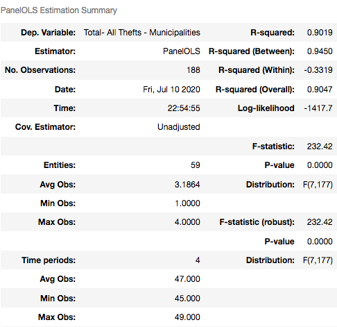
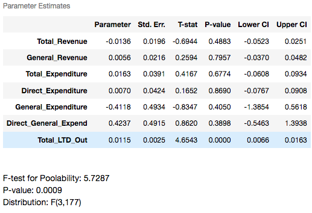

Financial Spending Model
A three month service learning project for the Idaho Policy Institute(IPI); this is a project I completed for my graduate data science course at Boise State. This Project successfully makes use of Idaho's municipal government financial data by providing insightful models to augment the decision making process. This specifically correlates government expenditure and crime allowing for the optimization of all future investments.
View the Project Repository for a deeper dive into the code
Meeting the Client:
Dr. Cheong Kim from the Idaho Policy Institute has assembled a file containing data on finances, population, and crime for virtually every city in Idaho. Dr. Kim and his colleagues are social scientists performing research to assist decision makers in answering the difficult decisions of the day, and helps state and local government leaders navigate change and forge strong directions for a better Idaho.
Objective of the Project
With the desire to augment the decision making process for state and local government bodies, Dr. Kim sought to improve the investment process of government funds. It was asked that my team and I identify expenditure trends relation to various crime statistics. In doing so these decison makers would have a more optimized ability to allocate resources.
Initial Database
Database Overview
- Scope: municipalities in Idaho, 1995 - 2014/5
- 23 non-fiscal variables (e.g., government employees, crimes, Metro/Micro SA status, population, pop density, nonprofits, and businesses)
- 576 fiscal variables, which derived from the Government Finance Database produced by Pierson, Hand, and Thompson (2015)
Idaho Municipal Database
- Scope: counties in Idaho, 1995-2015/6
- Currently, 11 variables (e.g., crimes, nonprofits, businesses, and income) + populations and pop density are being added by Jeff’s class.
- A large number of fiscal variables will be incorporated from the Government Finance Database produced by Pierson, Hand, and Thompson (2015) down the road.
Idaho County Database
- Idaho Municipal/County Databases: Fiscal variables for Idaho derived from the Government Finance Database produced by Pierson, Hand, and Thompson (2015) who compiled the U.S. Census Bureau’s government financial statistics.
- The Census Bureau’s government financial statistics are created by merging two series of financial information: Census of Government Finance and Employment Data (years ending 2 and 7) and Annual Survey of State & Local Government Finances (in-between years).
- Dollar amounts are expressed in thousands of nominal dollars (Pierson et al. 2015, p.3).
- This database is publicly available
- Comprehensive database in one standardized format in one file
- Basic but critical measures are provided, which were unavailable in the original Census Bureau’s government financial statistics; e.g., total revenue, total expenditure among others.
- Self-reported numbers: for best accuracy, actual government budget doc/CAFR should be the best. So, if you are interested in a small number of governments (say up to 10) or current budget numbers, go to the government websites and obtain the actual dollar numbers. But, if you are interested in comparing many governments (say 100) at the same time and creating an average trend chart from them, collecting data would be time-consuming. In this case, this database could be a good source.
- Overrepresentation of large municipalities in-between years.
- Lots of missings values.
Government Finance Database
Advantages:
Limitations:
Data Manual
Importing new Data
We felt this dataset was useful relevant information e.g. employment and business statistics. After importing we merged these tables with the one provided by IPI, or in one case made an additional table. Listed below are all additional sources.
- U.S. Census Bureau (USC)
- Willamette Government Finance Database (GFD)
- Federal Bureau of Investigation (FBI)
- Bureau of Labor Statistics (BLS)
Data Sources
Provides population measurments at various entity levels including state, county and city
Provides goverment cash flow information for each city/county in Idaho
Describes various crime variables
Allows for adjustment for inflation and provides employment related statistics
Backend Functions We Created
We created many functions and methods to augment our work such as converting to real dollars using the current year as a parameter. We also did this to regularize some of our variables. Furthermore there are many plotting functions such as heat maps, matricies of distributions and scatter plots, choropleth maps , etc. These methods and functions are all stored within the support folder and have their own documentation. These were hidden for aesthetics and need not be read to understand the process of this notebook.
Exploring & Modeling of Municipial Dataset:
This is a project presented to my partners and me by our client, The Idaho Policy Institute, In which they provided a dataset containing information on finances, population and crime for virtually every city and/or county in Idaho. The goal of the project was to find relationships between financial decisions with crime and employment trends in cities of Idaho with efferent sizes.
Objectives for our Models
The amount of columns contained within the set describing crime amounted to 7 however there were over 500 variables describing financial revenue or expenditure. Using this knowledge we thought it best to attempt to describe crime using financial information as our independent variables (along with additional information). We chose to do this so that we would not limit the features available for our models along with the ability of this type of model to provide a good description of the relation between government finances and crime. The variables describing crime were quantities of occurances so to use this as our dependent variable we needed to construct a regression model. A future iteration of this project one might create a classifier that describes whether an increase or decrease in a feature will result in an increase or decease in crime. We do not address this effect of each feature directly to our dependent as to avoid feature phishing.
Selecting a Model
Since this a panel dataset we wanted to account for the serial correlation resulting from the time series. Additionally we thought a linear model the easiest to interpret and understand the inner workings of the data itself. This lead us to a time effects model for our initial build, however the world is not linear and features will likely contain heteroskedasticity so past comprehension a non-linear approach will likely be a more robust and accurate model.
What is OLS and it's Assumptions
- Error has a Conditional Mean Zero
- Features are identically independently distributed
- No Perfect MultiCollinearity
- Large Outliers are Unlikely
Least Squares Assumptions
Provides population measurments at various entity levels including state, county and city
Provides goverment cash flow information for each city/county in Idaho
Describes various crime variables
Nonzero finite fourth moments
Preprossesing
Train Validation Test Split
Interpolation
Solving for some Hyperparameters
Safegaurding against Omitted Variable Bias
Lasso
Chi Squared Test
Handling MultiCollinearity
OLS Time Effects Regression Model
Summarizing Results
This model appears to be a good representation of the data. From this we can see that Population, Total_CashSecurities, Nonin_Trust_CashSec, Total_Expenditure, ect. all are largly statistically significant in identifying Total Theft Population and Total Expenditure seem to be accurate in describing Total Theft with low standard errors. This makes logical sense in that the more people in an area the more crime. Oth_Nonin_Fd_CashSec, Tot_Chgs_and_Misc_Rev and Nonin_TrustCashSec also have low std. errors. Our final P-value appears to be statistically significant so lets use our test data to see how it performs with unseen data.
Identifying the Correlation
Nice correlation but lets avoid phishing
